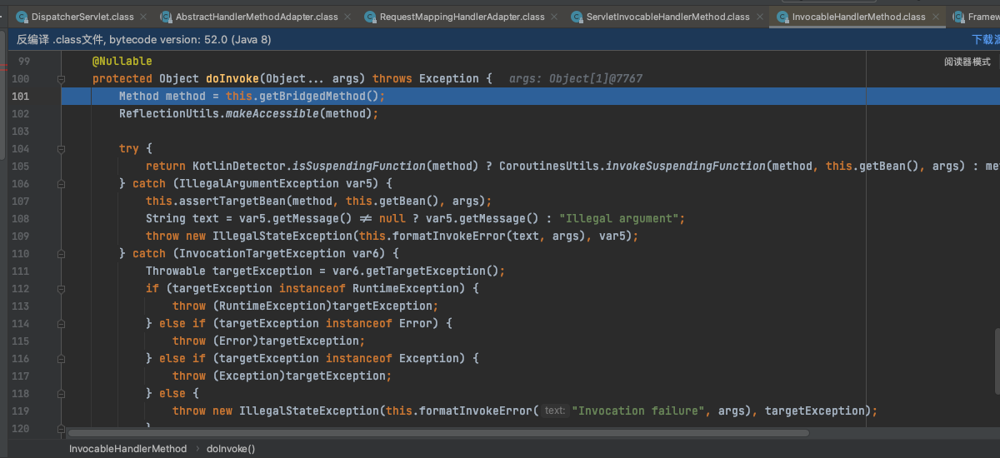

Thymeleaf的SSTI复现与分析
介绍
Thymeleaf 是一个流行的 Java Web 视图模板引擎，可以方便地将数据和 HTML 模板结合起来生成网页。但是在使用 Thymeleaf 的过程中，如果没有严格控制用户输入，可能会发生模板注入漏洞。
环境搭建
添加Java包和resources包
pom.xml
1 | <!-- 继承父包 --> |
application.yml，放在resources(原本没有，需要创建)
1 | server: |
启动类（放在com.garck3h下）
1 | package com.garck3h; |
Handler
1 | package com.garck3h.controller; |
正常访问URL，出现了500报错，因为此时我没有对应的模板文件才会报错，但是这个不影响漏洞的利用
复现
payload
1 | 192.168.163.154:8090/index1/index2?index3=__$%7bnew%20java.util.Scanner(T(java.lang.Runtime).getRuntime().exec(%22open%20-a%20Calculator%22).getInputStream()).next()%7d__::.x |
分析
先讲一下SpringMVC的一个工作流程
- 客户端发起 HTTP 请求，请求会到达 DispatcherServlet。
- DispatcherServlet 接收到请求后会通过 HandlerMapping 确定当前请求需要调用哪个 Controller 对象，默认情况下使用的是 RequestMappingHandlerMapping。
- HandlerAdapter 负责将请求与 Controller 方法进行绑定，并处理方法的参数，准备请求数据。
- Controller 执行相应的业务逻辑，创建并绑定 Model 和 View，并返回 ModelAndView。
- ViewResolver 根据 View 的指定格式解析目标视图为完整的视图，并返回给 DispatcherServlet。
- DispatcherServlet 发送 Model 数据给 View 以便完成渲染，生成最终的响应结果。
- 最终的响应结果返回给客户端浏览器，已经完成了整个 Spring MVC 的请求响应过程。
在Spring MVC框架中是由DispatcherServlet作为前端控制器（Front Controller）来控制请求和响应、路由请求和处理 HTTP 请求的。
org.springframework.web.servlet.DispatcherServlet
1 | package com.garck3h.controller; |
doDispatch
checkMultipart
判断请求是否为 Multipart 类型，并对请求处理进行必要的操作
getHandler
调用getHandler() 方法来确定具体的 Controller 处理器
调用各自的 getHandler(request) 方法来获取对应的 HandlerExecutionChain 对象
这个对象包含了要执行的controller handler和其拦截器链，它是一个管理一组拦截器链的实例，其中包含了一个或多个拦截器 HandlerInterceptor 以及目标对象和目标方法。
如果某个 HandlerMapping 的 getHandler() 方法返回了该对象，则表示该 HandlerMapping 能够处理当前请求，此时就会将 HandlerExecutionChain 返回给 DispatcherServlet，让其执行相关业务逻辑
1.前端控制器拦截用户的请求
我们直接看doDispatch这个方法，首先是和传统的servlet一样传入：HttpServletRequest request, HttpServletResponse response。
然后就是定义一些各种类型的变量，做初始化操作。
然后来到513行是调用checkMultipart 方法检查是否包含multipart/form-data 编码方式，有的话，就进行进一步的处理。514行将 multipartRequestParsed 变量设置为 true。
2.处理器映射器执行用户的请求
然后来到515行的getHandler，我们直接进去分析。首先是判断一下handlerMappings是否为空。
handlerMappings的初始化是在initHandlerMappings中进行的，扫描容器中所有的 HandlerMapping Bean，并将这些 Bean 添加到 handlerMappings 列表中。
回到getHandler，遍历handlerMappings 列表来查找匹配的处理器（即 Controller），并返回对应的 HandlerExecutionChain 实例。下图可以看到我们的index1的Controller和内置的error Controller
SpringMVC一共初始化了5个处理器映射器
遍历拿到了我们的一个Controller和方法名以及返回值的类型（String）
映射器给我们处理的Handler封装到了一个叫HandlerExecutionChain里面。而在HandlerExecutionChain对象里面有一个handler对象，是HandlerMethod类型的，这就是处理器映射器最终将我们的请求处理成的Handler对象
3.获取处理器适配器HandlerAdpater
回到doDispatch，继续往下走到521行，这里调用了getHandlerAdapter方法。这个步骤是
我们跟进去到了getHandlerAdapter。这里是对所有适配器进行遍历，查找支持该处理程序的适配器，最终将返回第一个支持该处理程序的适配器。并执行所需操作，例如解析请求参数、调用相应的业务逻辑、生成响应等。
1 | // 获取处理器适配器 |
SpringMVC为我们初始化了以下4个处理器适配器：
回到doDispatch，继续往下走到531行。判断在请求发生之前有没有预处理拦截器。预处理拦截器一般用于身份验证、授权、日志记录等。
4.处理器适配器对Handler进行处理
继续往下走到535行。从 mappedHandler对象获取handler对象，然后将其与请求(request)对象、响应(response)对象交给适配器(Adapter)进行调用。在适配器中调用处理程序的相应方法，通常是Controller中的某一个方法，并根据业务逻辑生成响应数据。最终结果存储在ModelAndView实例对象(mv)中。
我们跟进去
来到了RequestMappingHandlerAdapter类的handleInternal方法。首先是对请求进行检查(checkRequest)，接着调用invokeHandlerMethod函数执行处理程序(handlerMethod)的方法，并根据业务逻辑生成响应数据。最后，根据配置条件设置缓存控制(Cache-Control)头部信息并返回ModelAndView实例对象(mav)。
来到invokeHandlerMethod(487)，我们跟进去。前面这些是根据请求参数，生成一个Web数据绑定器工厂(binderFactory)和模型工厂(modelFactory)。
我们来到552行的invocableMethod.invokeAndHandle。它是用于执行处理程序(handlerMethod)的方法。我们跟进去；首先是调用invokeForRequest方法，该方法是实现@RequestBody注解的功能，将http请求报文解析为我们设置的对象。
我们跟进去；首先通过getMethodArgumentValues方法获取处理程序所需的参数，如日志所示，代码将请求参数打印到日志中。然后通过doInvoke方法执行接口的具体业务逻辑代码。
跟进61行的doInvoke，进入到里面。 获得被桥接的⽅法（101），开打访问权限（102）

这里的105行，调用了invoke。通过反射，调⽤ Controller 中响应的⽅法
1 | return KotlinDetector.isSuspendingFunction(method) ? CoroutinesUtils.invokeSuspendingFunction(method, this.getBean(), args) : method.invoke(this.getBean(), args); |
最后通过反射进行调用。先是检查调用者对方法的访问权限，并获取需要调用方法的MethodAccessor实例，最后调用MethodAccessor的invoke方法来执行相应的方法。
最终回到invokeHandlerMethod，进入到了if里面getModelAndView(554)。
我们跟进去看看；这里是根据mavContainer对象（包含视图名称、数据模型等信息）创建并返回ModelAndView对象
至此，我们就拿到了mav，也就是ModelAndView
1 | [view="__${new java.util.Scanner(T(java.lang.Runtime).getRuntime().exec("open -a Calculator").getInputStream()).next()}__::.x"; model={}] |
最终回到doDispatch，然后来到540行。
这里调用请求处理器适配器的postHandle()方法，对Web请求在处理完成后做一些额外的工作，比如在模型和视图参数中添加、删除或修改属性值等，以及对响应对象进行操作，比如设置相应头信息、状态码以及重定向等
5.处理派发结果
SpringMVC通过处理器适配器将Handler处理成ModelAndView了。
下面我们来看到548行
我们跟进去看看，processDispatchResult方法实现了请求的分发以及结果的处理。在具体工作中，该方法接收HTTP请求和响应对象、当前匹配到的HandlerExecutionChain处理链、可能存在的ModelAndView模型视图对象以及处理过程中可能抛出的异常等参数，然后根据不同情况，调用相应的方法进行处理。

搜索发现，有一个叫render的方法对mv进行处理，我们跟进去。
750行获取View视图对象，进去看看。循环遍历初始化好的视图解析器进行解析处理，最终得到一个View视图对象
回到render；来到770行，我们跟进去看看。
这里调用了renderFragment方法
继续跟进去renderFragment；在101行，判断viewTemplateName是否包含::如果包含的话进入else分支，进行表达式预处理。
首先是传入configuration 对象作为参数，获取一个标准表达式解析器对象parser；然后是通过在 parser对象上调用 parseExpression() 方法，传入两个参数：当前渲染的页面上下文对象 context 和表示要渲染的 HTML 片段名称的字符串 “~{ + viewTemplateName + }”，得到一个 FragmentExpression 对象 fragmentExpression
此时的viewTemplateName为：
1 | __${new java.util.Scanner(T(java.lang.Runtime).getRuntime().exec("open -a Calculator").getInputStream()).next()}__::.x |
viewTemplateName中包含::时，会给其加上~{}然后进行解析
parseExpression(109) 我们跟进去看看
跟进去preprocess。进行正则提取出__…__之间的东西
提取得到的
1 | ${new java.util.Scanner(T(java.lang.Runtime).getRuntime().exec("open -a Calculator").getInputStream()).next()} |
然后调用expression.execute（42）
我们跟进来发现又调用了另一个execute，把this（payload）传进去。
我们跟进去，一进来就发现第一个if对expression 对象进行类型检测，判断表达式类型是否为 SimpleExpression。这里确实是SimpleExpression，所以调用SimpleExpression.executeSimple进行了执行。
SimpleExpression.executeSimple执行spel表达，成功弹计算器。
总结
- 这个漏洞的复现，很多工作都是在跟进SpringMvc的一个工作流程。需要对SpringMvc的工作流程了解，和SpringMvc的九大初始化组件了解，才得以进一步追踪污染传播的方法以及整个流程。
- 在通过render 渲染进行视图渲染的时候，会先检测是否包含“::”，然后进入分支添加上~{}进行解析。解析前进行预处理，即通过正则取出两个横线之间的内容，然后调用标准解析器对其进行解析，匹配到了spel表达式，从而导致了spel表达式命令执行。
修复方式
- 升级版本
- 配置
@ResponseBody或者@RestController
1 | 这样 spring 框架就不会将其解析为视图名，而是直接返回, 不再调用模板解析。 |
- 在返回值前面加上 “redirect:”
1 | 这样不再由 Spring ThymeleafView来进行解析，而是由 RedirectView 来进行解析。 |
- 在方法参数中加上 HttpServletResponse 参数
1 | 由于controller的参数被设置为HttpServletResponse，Spring认为它已经处理了HTTP Response，因此不会发生视图名称解析。 |
参考
https://blog.csdn.net/weixin_43263451/article/details/126543803